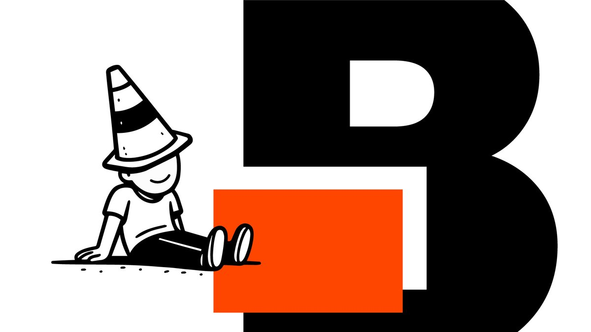

Stop searching for inspo. Start making.

Choose how to create
Choose your time
Could not load prompts. Please check your connection and try again.
00:45
Your random prompt
Time's up.
You made this

Could not load prompts. Please check your connection and try again.